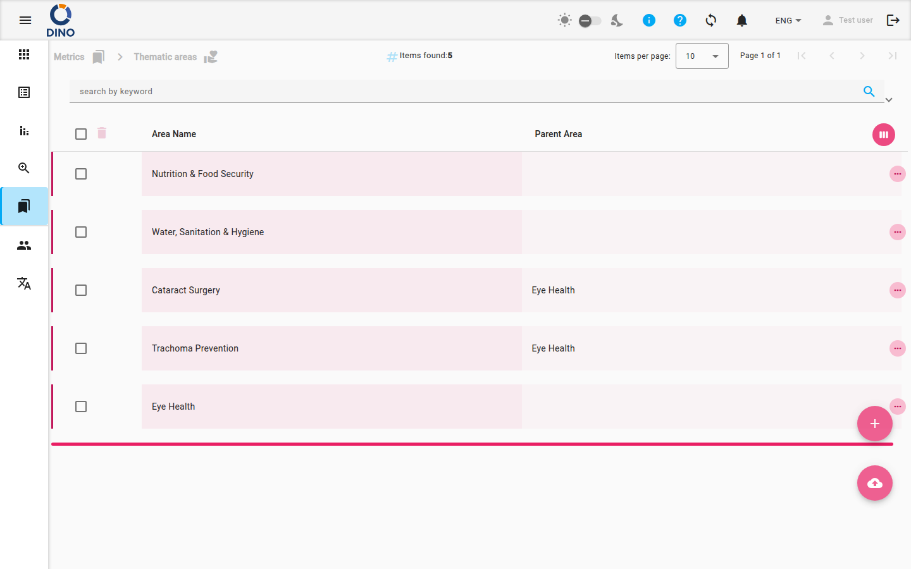

Gestion des valeurs de métrique – Zones thématiques
La page Zones thématiques (accessible depuis la section Métriques) vous permet d'organiser vos données de métrique par catégories hiérarchiques. Vous pouvez y afficher, créer, modifier et supprimer des zones thématiques, ainsi que filtrer et exporter la liste.

Ce que vous voyez
- Le fil d'Ariane en haut de la page indique votre position actuelle dans l'application (par ex. Métriques > Zones thématiques).
- Le tableau principal répertorie toutes les zones thématiques et affiche des colonnes telles que Nom de la zone, Zone parente et, si configuré, d'autres attributs. Vous pouvez personnaliser les colonnes visibles en cliquant sur l'icône Personnalisez les colonnes dans l'en-tête.
- Une barre de recherche et un panneau de filtres vous permettent de retrouver des zones par mot-clé, plage de dates ou autres métadonnées.
- Le bouton Export (cloud_download) vous permet de télécharger la liste actuelle sous forme de fichier.
- Deux boutons d'action flottants sont disponibles :
- + (Ajouter) – crée une nouvelle zone thématique.
- cloud_upload – importe des zones à partir d'un fichier externe.
Travailler avec les zones thématiques
Ajouter une nouvelle zone thématique
- Cliquez sur le bouton flottant +.
- Dans la boîte de dialogue qui s'ouvre, renseignez les champs obligatoires (par ex. Nom de la zone, Zone parente).
- Cliquez sur Créer pour enregistrer la nouvelle zone.
Zone parente
Pour créer une sous-zone, sélectionnez une Zone parente dans la liste déroulante. Si vous laissez ce champ vide, la nouvelle zone devient une entrée de premier niveau.
Modifier une zone existante
- Trouvez dans le tableau la zone que vous souhaitez modifier.
- Cliquez sur l'icône modifier (crayon) dans la colonne d'actions de la ligne.
- Modifiez les champs dans la boîte de dialogue, puis cliquez sur Enregistrer.
Afficher les détails
- Cliquez sur l'icône visibilité pour ouvrir une boîte de dialogue en lecture seule présentant tous les champs de la zone.
- Vous pouvez également cliquer sur une ligne pour la déplier et faire apparaître les zones enfants (si la hiérarchie est configurée).
Supprimer une zone
- Cliquez sur l'icône supprimer (corbeille) dans la colonne d'actions de la ligne.
- Confirmez la suppression dans la boîte de dialogue qui s'affiche.
À prendre en compte avant de supprimer
La suppression d'une zone parente peut avoir des répercussions sur les zones enfants. Dino vous avertira si des éléments y sont associés. Procédez avec prudence.
Recherche et filtrage
- Utilisez le champ de recherche par mot-clé en haut de la liste pour filtrer les zones par nom.
- Ouvrez le panneau de filtres en cliquant sur la flèche développer. Vous pouvez définir :
- Date de début / Date de fin – filtrer par date de création.
- Filtres supplémentaires (par ex. des champs propres à la métrique) – si votre instance dispose d'attributs personnalisés.
- Appliquez un préréglage de filtre (si disponible) pour charger rapidement des combinaisons de filtres enregistrées.
Exporter la liste
- Cliquez sur le bouton cloud_download dans la barre d'outils.
- Choisissez le format d'export (par ex. CSV, Excel).
- Le fichier sera généré à partir de l'ensemble des zones actuellement visibles (filtrées).
Actions groupées
Pour effectuer des actions sur plusieurs zones à la fois (par ex. en supprimer plusieurs), cochez les cases situées à côté des lignes. Les boutons d'action groupée apparaissent alors dans l'en-tête de colonne. Actuellement, l'écran Zones thématiques prend en charge la suppression groupée.
Naviguer grâce au fil d'Ariane
Le fil d'Ariane indique votre position actuelle (par ex. Métriques > Zones thématiques). Cliquez sur n'importe quel lien du fil d'Ariane pour remonter à un niveau supérieur.